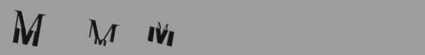

Ramona Steffen ramona.steffen@gmx.de
Font: Hybrid

Monday 24 January
Someone making decisions for you
When you're writing something, you sometimes have to have a special type (important --> big). Using the Internet.
You have personal things. Type is round/horizontal. These are words that someone can use/touch someone. If we can find similar words to the word round. If you use that word, a program can collect these words/how often you use them. Then the program knows how to layout the text.
Find a type for the text.
Lucas: start with a small database, then when the idea works, you can expand the database. Beginning of Shapenet.
I make the decision
Most important thing is that you can choose type/size/style. When you mix that, you have one letter. Fonts are from extreme lettershapes.
Tuesday 25 January
Divide letter in four pieces, four different types.
Other idea was that when we write a text, the program highlights the important parts.
How can I support the text to find letters that are important?
I'm going to combine wordnet, google and tx.
Lucas: How to find the real meaning? Perhaps you can tag the text.
Wednesday 26 January

|
Instead of dividing the letters into four pieces, I could divide them into two pieces. The top and bottom halves are joined from different letters, so that one part is stronger than the other. There are some practical problems with joining these letters: for example, the way to type them. However, as Tom pointed out, the Sauna dingbat also works by layering text on top of each other by having several different lettershapes that you can combine into one (with different colors). |
Friday 28 January
Hybrid
The basic structure has now become more flexible. Letters are constructed out of two pieces.
You choose a font when you want to support the content. When I divide them, I have more possibilities.
Try to figure out with the word type: the meaning is more hidden in the meaning. (cartoony versus more stable letters)
What are you gonna do with marks (comma, exlamation mark)? In the middle of the line, split them.
Basefont is Gaudy Rockwell. Adapted the letterforms because some had problems (e.g. angle of Z).
Next week, I will try to mix everything : size font, lot of experiment. can really make it live.
Monday 31 January
I'm still going with the idea from last week that when you're writing a text some of the words change.
The website of the University of Leipzig shows a program that finds and connects synonyms of a word you type.
This interactivity could happen with a word. Change top and bottom part; when you change them maybe all the synonyms are in the background and also change size.
There are also some pretty interesting questions about readibility, because you can read words without seeing the entire word.
So, the type action will do a lookup and give extra words and will change the text as well.
Both the program and me can change things. The program can decide if the top part has something to do with formal characteristics, like soft and round. I'm focusing on a word-by-word basis, not the entire text, and I am still working on the look.